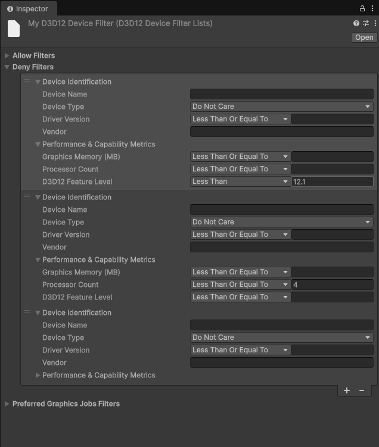

D3D12 Device Filtering Asset allows you to fine-tune which Windows devices should use the D3D12 API and define your preferred graphics jobs modes. This asset uses the following filter lists:

Unity automatically applies the following specifications for D3D12 support. Devices that don’t meet these specifications don’t use D3D12 API when running Unity applications and fall back to the default graphics API configured in the Player settings. You can override these using the D3D12 Device Filtering Asset to define your custom set of criteria.
Unity restricts devices that meet any of the following specifications from using D3D12 API when running Unity applications.
12.1
4
3600 MB
Integrated GPU AND Vendor Name: Intel or AMD
Unity allows devices with Feature level 12.2 and higher to use D3D12 API when running Unity applications, regardless of the Device Type. For devices with Feature level 12.1, refer to the Deny Filter List section for any applicable restrictions.
Each filter list contains a set of parameters to enter device specifications. You can add multiple entries to each filter list. Unity then allows or restricts the devices that match the specifications entered in the filter lists from using the D3D12 API and assigns any specific graphics jobs modes.
You can specify values for the following parameters to identify a device or set of devices:
The Preferred Graphics Jobs Mode parameter is available in the Preferred Graphics Jobs Filter List only.
The device properties must match all the parameter values (logical AND) to determine whether it’s allowed or denied the ability to run your application with D3D12 API and use the preferred graphics jobs mode. You can use C# regular expressions for the Graphics Device Vendor and Graphics Device Name. For example, \[I|i\]ntel .\*6\[0-9\]\[0-9\], Qual\*. The Unity Editor displays an error for an invalid regular expression. If the parameter values are set with invalid regular expressions, the application build fails.
The Allow Filter List uses your chosen comparison operators to identify devices that match the specified parameter values for driver version, D3D12 feature level, graphics memory, and processor count.
For example, if you set up the following:
In this case, the Allow Filter List includes all devices with an NVIDIA RTX 3080 GPU, and a driver version greater than or equal to 347.23.0.12
The Deny Filter List uses your chosen comparison operators to restrict devices that match the specified parameter values for driver version, D3D12 feature level, graphics memory, and processor count.
For example, if you specify:
In this case, the Deny Filter List restricts all the devices with ATI Radeon RX 9000 GPU that have less than or equal to 8 processors.
The Preferred Graphics Jobs Filter List uses your chosen comparison operators to identify devices that match the specified parameter values for driver version, D3D12 feature level, graphics memory, and processor count in order to apply the specified graphics jobs mode.
For example:
In this case, the Preferred Graphics Jobs Filter List enables the Native graphics jobs mode on all devices with an RTX 3080 GPU that have a driver version less than 347.23.0.12.